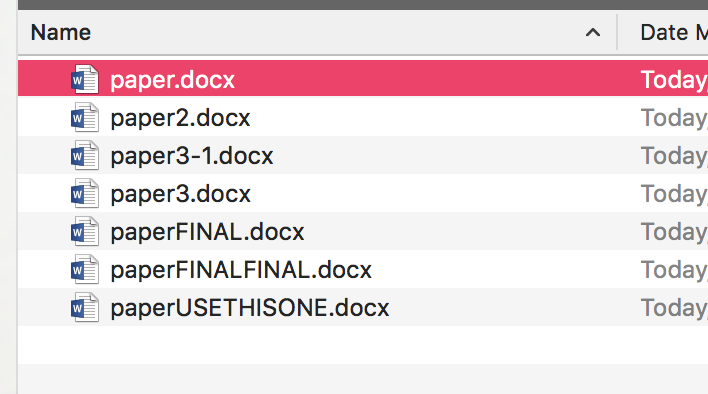

Intro to Version Control with
Git & GitHub
Girl Develop It | Summer 2018
Find these slides at https://github.com/ShaynaCummings/gdi-intro-github

Our Team
Thank you to our wonderful TAs!
- Marissa
- Gail
- Natalia
Instructor:
@ShaynaCummings
shayna.cummings@gmail.com
Course materials:
Tools
We'll be using the following tools in class today:
- Command Line Interface:
- Mac OS: Terminal (pre-installed)
- Linux: Terminal (pre-installed)
- Windows: babun.github.io (Shell based on Cygwin)
- Git: install from git-scm.com/downloads
- GitHub: make a free account at github.com
What we'll cover today
- Version control concepts & Git workflow
- Setting up a new repository
- Basic git commands: adding, committing & pushing change)
- Setting up a remote repository, branching & merging
- Remote collaboration
- Debugging and resolving merge conflicts
1. Version control concepts & Git workflow
Group project woes
Ever worked on a group paper and ended up with something like this?
A little better
Version history in Google Docs
What is Version Control?
Software that allows you (and your team) to do two powerful things:
Collaborate: Create anything with other people, from academic papers to entire websites and applications.
Track and revert changes: Ability to see who specifically made what changes and when. Be able to go back to a "snapshot in time" to fix something that went wrong.
Version Control Types
- 1990s: CVS (Concurrent Version Systems)
- 2000s: SVN (Apache Subversion)
- 2005: Git
Centralized Version Control (CVS, SVN)
There is one central server and each client (person) checks out and commits changes to it
Distributed Version Control (Git, Mercurial)
Each client (person) has a local copy of the code, which they can then reconcile with the main server.
What is Git?
Git: Free, open source version control system
- Distributed version control system, most widely used
- Command line application
- Runs on your local machine
What is GitHub?
GitHub: web-based service that interacts with Git and allows you to host and share your code for free. You can:
- Collaborate with others on projects
- Share/showcase your code
- Find code that you can use in your own projects
Git Terminology
- Repository ("Repo"): a project folder in which Git is tracking changes to files
- Working Directory: the current local copy of a Git repository you are working on (on your computer)
- Index: staging area - list of changes not yet committed
- Head: list of committed changes
- Remote Repository: a copy of a Git repository that is stored in the cloud (in our case, GitHub)
Git workflow
Git workflow
- Create a new folder for your project &
git init
to make it a Git repo (orgit clone
an existing repo) - Work on your project
git add
changes to the Index (staging area) as you workgit commit
changes to the Head ("official" list of changes)git push
changes to your remote repository
2. Setting up a new repository
Fire up your command shell
- Mac OS/Linux: search in Finder for Terminal
- Windows: in the Start menu or screen, search for Babun or Cygwin
user@bash:
Check that Git is installed
git --versionConfigure Git
In order to record changes in your commit history, Git needs to know a little about you.
Add your Github Username
git config --global user.name "YOUR NAME"
And the email attached to your GitHub account
git config --global user.email "YOUR EMAIL"Creating a new repository
1. Create new folder
mkdir my-repo2. Switch into that folder
cd my-repo3. Initialize the folder as a Git repo
git initWhat happened?
Let's check it out!
ls -alHey, there's a new (hidden) folder:
your-name staff 128 Jun 19 00:23 .
your-name staff 672 Jun 19 00:39 ..
your-name staff 384 Jun 19 01:04 .git
Let's see what's inside
ls -al .gitWe can also look at this Finder, but you'll only see .git if hidden files are set to visible
Making changes
Create a new file
touch README.mdEvery repository should have a README file!
3. Basic git commands: adding, committing & pushing changes
Making changes
git status: Check to see what changes Git has noticed
git statusMaking changes
git add: Adds files to the Index (staging area for your next commit)
Add all changed files
git add -AOr to add a single file
git add README.mdMaking changes
git add-ed something you didn't intend to?
git resetremoves those file changes from the Index
Remove all files (from the Index)
git resetRemove a single file (from the Index)
git reset README.mdMaking changes
git commit: Commits your changes to the Head
- A commit marks a "snapshot" in your project that you can refer/revert back to
- Every commit requires a "commit message" - a note about the purpose of the change
git commit -m "Update README file"Making changes
git log: Shows list of commits
git log
commit 0ac0ce458f65958fd6 (HEAD -> master)
Author: Shayna Cummings
Date: Tue Jun 19 01:14:20 2018 -0400 Add README file
Practice
- Add some text to your README.md file (using TextEdit, Notepad, or another text editor) and save
- Check to see what changes Git noticed
- Add and commit the changes
- Check your commit history
Reverting changes
git reset [commit]: undoes all commits after [commit] (but keeps all commits in log history)
git reset 579e546a022fe0e1297d80ebefa4c
--hardoption discards log history
git reset --hard 579e546a022fe0e1297d80ebefa4cPractice
- Find the commit hash for your first commit
- Revert back to that first commit
Ignoring files
In every repo, there are likely some files that you don't want Git to track, including:
- System-generated files (ex: logs)
- Files with sensitive info (ex: passwords)
You can tell Git to ignore any changes to these files by listing them in a .gitignore file. Templates for many languages are available at github.com/github/gitignore
Ignoring files
Create a .gitignore file inside your repo
cd my-repo
vim .gitignoreAdd paths for files you want Git to ignore
.DS_Store
*.log
~
~
--INSERT--Practice
- Create a .gitignore file inside your repo that ignores .DS_Store files
- Add and commit your changes
4. Setting up a remote repository, branching & merging
Remote Repositories
Why use a remote repository?
- Back up your code
- Showcase your work
- Share/collaborate with others
Create a new GitHub repository
- Sign into GitHub: https://github.com/login
- Click + in the upper right and choose "New Repository"
- Fill out the form and click Create Repository (see example on next slide)
Connect your local repo to your GitHub repo
Find the URL for your new GitHub repo
Connect your local repo to your GitHub repo
git remote add origin https://github.com/...
Verify that the remote repo was added
git remote -vPush code to GitHub
git push [remote name] [branch name]
push most recent commit to remote repo
git push -u origin masterPractice
- Add some text to your README.txt file and save
- Add and commit the change
- Push the change to GitHub
Playing nicely with others
Git & GitHub allow users to work collaboratively on the same project through:
- Branching: Developing features in isolated copies of a repo
- Merging: Incoporating branches into the master
Creating local branches
See what branch you're currently on
git branch
git checkout -b [branchname]: creates new branch
git checkout -b add-widgetsUse a descriptive branch name, so you'll remember what you did on it.
Creating remote branches
git push [remote] [branchname]:
Creates a remote copy of your new local branch and pushes changes to the remote branch
git push origin add-widgetsPractice
- In your repo, create a new local branch named
[first name][last initial], for example:shaynac - Create a new text file inside the repo named
[first name][last initial].txt, for example:shaynac.txt - Commit your change
- Push your branch to the remote repository
5. Remote collaboration
Branching workflow
Clone a remote repository
git clone [URL]
Make a copy of an existing repository on your local computer
git clone https://github.com/gdiboston/gdi-intro-github-students
https://github.com/gdiboston/gdi-intro-github-students
Or fork a repository to suggest changes
Click the 'Fork' button to make a copy of someone else's repo on your own Github account, and then use 'git clone' to clone your copy to your local computer
git clone [URL]
git clone https://github.com/YOURUSERNAME/gdi-intro-github-students
Pull requests
Pull requests (PRs) send a message to the owner(s) of the repo asking to merge your branch with your changes into the master branch
- PRs are specific to GitHub (not part of Git) - sometimes referred to as 'diffs' in other systems
- PRs can only be made via the GitHub UI
Create a pull request
Switch to your branch and click 'new pull request'
Comparing branches on Github
You can open a PR from your branch -> master within one repository
OR
from your branch in a forked version of a repo -> the original repository
Merge a pull request
If there are no conflicts, a pull request can be merged with one click
Depending on the repo settings, you may be able to merge your own pull requests... this is not always a good idea
Syncing local & remote repos
After pull requests are merged, it's important you sync up your local repo!
git pull [remote]:
Gets the updates ("pull down changes") from the remote version of the current branch and merges them with your local copy
git checkout master
git pull originPractice
- Make a pull request
- Wait for all class pull requests to be merged
- Sync your local master with the remote master
6. Debugging and resolving merge conflicts
Merge conflicts
Merge conflicts occur when changes in your branch conflict with changes made to the remote master.
This can happen when:
- You're working on the same file as another user, and their changes get merged first
- You haven't synced your local master with the remote master in a while
Resolve a merge conflict
1. Sync your local master with the remote master
git checkout master
git pull2. Attempt to merge your local master into your local working branch (Git will tell you there's a conflict)
git checkout problem-branch
git merge masterResolve a merge conflict
3. Edit the problem file(s) in your local branch to remove the conflict(s) with the master branch. Git will mark conflicts in your files using <<< and >>>
<<<<<< HEAD
Here's the line in your branch
======
Here's the same line in the master
>>>>>> master
Resolve a merge conflict
4. Commit your changes
git add [files]
git commit -m "resolve merge conflict"5. Push your changes to the remote branch
git push origin problem-branchNo need to open a new Pull Request - your pushed changes will automatically be reflected in the current Pull Request
Resources
Thanks!
Questions?
boston@girldevelopit.com